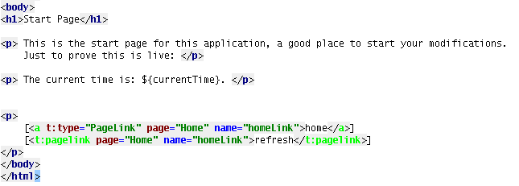

| Syntax Highlighting | |
|
Special syntax hightlighting in Tapestry templates in order to make template visual interpretation much easier. The section covers the following features:
To configure the syntax highlighting feature you have to go to Colors & Fonts settings. In the Tapestry tab you can then choose the syntax coloring scheme that you prefer. 
You can configure the plugin to highlight every Tapestry specific tag and tag parameter in your template. If you do, you will be able to easily identify in your template what are normal tags and Tapestry tags. 
|